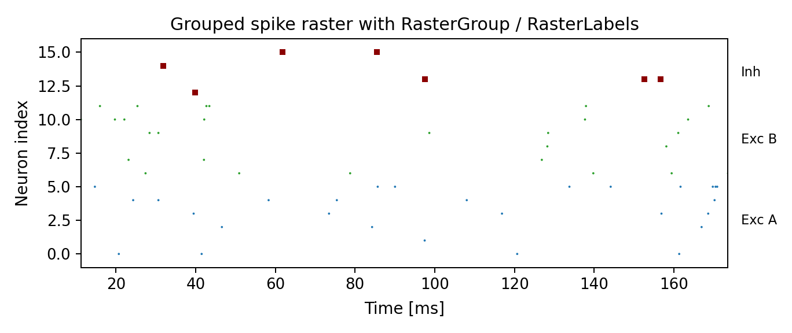
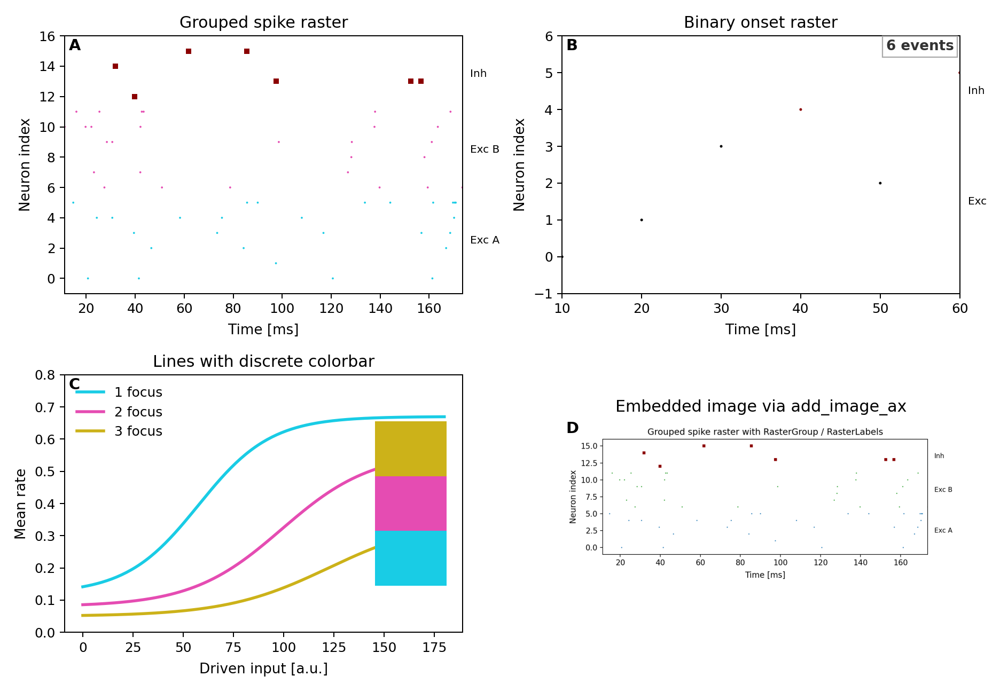

plotting
Reusable plotting helpers for figures in this repository.
The package provides three main layers:
- spike rasters via
plot_spike_raster(...) - binary-network onset rasters via
plot_binary_raster(...) - shared figure styling via
FontCfg,style_axes(...), and the public palette helpers
Examples
Grouped spike raster example generated from this repository:

Composite showcase generated from this repository:

Using RasterGroup and RasterLabels explicitly:
import matplotlib.pyplot as plt
import numpy as np
from plotting import FontCfg, RasterGroup, RasterLabels, plot_spike_raster, style_axes
spike_times = np.array([5, 8, 15, 21, 34, 36, 44, 52, 59, 63], dtype=float)
spike_ids = np.array([0, 4, 1, 6, 2, 7, 3, 5, 8, 9], dtype=int)
groups = [
RasterGroup("exc_a", ids=range(0, 5), color="#1f77b4", label="Exc A"),
RasterGroup("exc_b", ids=range(5, 8), color="#2ca02c", label="Exc B"),
RasterGroup("inh", ids=range(8, 10), color="#8B0000", label="Inh"),
]
fig, ax = plt.subplots(figsize=(5, 2.5))
plot_spike_raster(
ax,
spike_times,
spike_ids,
groups=groups,
labels=RasterLabels(location="right", kwargs={"fontsize": 9}),
)
ax.set_xlabel("Time [ms]")
ax.set_ylabel("Neuron")
style_axes(ax, FontCfg().resolve())
fig.tight_layout()
For binary-network traces, use BinaryStateSource together with
plot_binary_raster(...). The generated showcase above includes a full
two-by-two example with grouped spike rasters, binary onset rasters, a discrete
colorbar, and image embedding.
Regenerating docs:
python scripts/generate_api_docs.py
1"""Reusable plotting helpers for figures in this repository. 2 3The package provides three main layers: 4 5- spike rasters via `plot_spike_raster(...)` 6- binary-network onset rasters via `plot_binary_raster(...)` 7- shared figure styling via `FontCfg`, `style_axes(...)`, and the public palette helpers 8 9Examples 10-------- 11 12Grouped spike raster example generated from this repository: 13 14 15 16Composite showcase generated from this repository: 17 18 19 20Using `RasterGroup` and `RasterLabels` explicitly: 21 22```python 23import matplotlib.pyplot as plt 24import numpy as np 25 26from plotting import FontCfg, RasterGroup, RasterLabels, plot_spike_raster, style_axes 27 28spike_times = np.array([5, 8, 15, 21, 34, 36, 44, 52, 59, 63], dtype=float) 29spike_ids = np.array([0, 4, 1, 6, 2, 7, 3, 5, 8, 9], dtype=int) 30groups = [ 31 RasterGroup("exc_a", ids=range(0, 5), color="#1f77b4", label="Exc A"), 32 RasterGroup("exc_b", ids=range(5, 8), color="#2ca02c", label="Exc B"), 33 RasterGroup("inh", ids=range(8, 10), color="#8B0000", label="Inh"), 34] 35 36fig, ax = plt.subplots(figsize=(5, 2.5)) 37plot_spike_raster( 38 ax, 39 spike_times, 40 spike_ids, 41 groups=groups, 42 labels=RasterLabels(location="right", kwargs={"fontsize": 9}), 43) 44ax.set_xlabel("Time [ms]") 45ax.set_ylabel("Neuron") 46style_axes(ax, FontCfg().resolve()) 47fig.tight_layout() 48``` 49 50For binary-network traces, use `BinaryStateSource` together with 51`plot_binary_raster(...)`. The generated showcase above includes a full 52two-by-two example with grouped spike rasters, binary onset rasters, a discrete 53colorbar, and image embedding. 54 55Regenerating docs: 56 57```bash 58python scripts/generate_api_docs.py 59``` 60""" 61 62from __future__ import annotations 63 64from .spike_raster import RasterGroup, RasterLabels, plot_spike_raster 65from .binary_activity import BinaryStateSource, collect_binary_onset_events, plot_binary_raster 66from .image import add_image_ax 67from .font import ( 68 FontCfg, 69 add_corner_tag, 70 add_panel_label, 71 add_panel_labels_column_left_of_ylabel, 72 style_axes, 73 style_legend, 74 style_colorbar, 75) 76from .time_axis import _time_axis_scale 77from .palette import ( 78 LINE_COLORS, 79 DEFAULT_LINE_COLOR, 80 _cycle_palette, 81 _sample_cmap_colors, 82 _prepare_line_color_map, 83 _prepare_value_color_map, 84 compute_discrete_boundaries, 85 draw_listed_colorbar, 86) 87 88__pdoc__ = { 89 "_time_axis_scale": False, 90 "_cycle_palette": False, 91 "_sample_cmap_colors": False, 92 "_prepare_line_color_map": False, 93 "_prepare_value_color_map": False, 94} 95 96__all__ = [ 97 "RasterGroup", 98 "RasterLabels", 99 "plot_spike_raster", 100 "BinaryStateSource", 101 "collect_binary_onset_events", 102 "plot_binary_raster", 103 "add_image_ax", 104 "FontCfg", 105 "add_corner_tag", 106 "add_panel_label", 107 "add_panel_labels_column_left_of_ylabel", 108 "style_axes", 109 "style_colorbar", 110 "style_legend", 111 "LINE_COLORS", 112 "DEFAULT_LINE_COLOR", 113 "compute_discrete_boundaries", 114 "draw_listed_colorbar", 115]
25@dataclass(frozen=True) 26class RasterGroup: 27 """ 28 Definition of a neuron group for spike raster plotting. 29 30 Parameters 31 ---------- 32 name: 33 Unique identifier for the group. Used to derive default labels. 34 ids: 35 Specification of neuron membership. May be a slice, range, iterable of ids, 36 NumPy array, or callable returning a boolean mask when applied to neuron ids. 37 color: 38 Matplotlib-compatible color specification for the group's spikes. 39 marker: 40 Marker symbol passed to ``Axes.scatter``. 41 size: 42 Marker size passed to ``Axes.scatter``. 43 label: 44 Optional display label overriding automatic label resolution. 45 46 Examples 47 -------- 48 ```python 49 groups = [ 50 RasterGroup("exc_a", ids=range(0, 5), color="#1f77b4", label="Exc A"), 51 RasterGroup("inh", ids=range(5, 7), color="#8B0000", label="Inh"), 52 ] 53 ``` 54 55 Expected output 56 --------------- 57 Passing `groups` into `plot_spike_raster(...)` draws each group with its own 58 color, marker, and label. 59 """ 60 61 name: str 62 ids: GroupIndexer 63 color: str = "black" 64 marker: str = "." 65 size: float = 4.0 66 label: Optional[str] = None
Definition of a neuron group for spike raster plotting.
Parameters
- name:: Unique identifier for the group. Used to derive default labels.
- ids:: Specification of neuron membership. May be a slice, range, iterable of ids, NumPy array, or callable returning a boolean mask when applied to neuron ids.
- color:: Matplotlib-compatible color specification for the group's spikes.
- marker:: Marker symbol passed to
Axes.scatter. - size:: Marker size passed to
Axes.scatter. - label:: Optional display label overriding automatic label resolution.
Examples
groups = [
RasterGroup("exc_a", ids=range(0, 5), color="#1f77b4", label="Exc A"),
RasterGroup("inh", ids=range(5, 7), color="#8B0000", label="Inh"),
]
Expected output
Passing groups into plot_spike_raster(...) draws each group with its own
color, marker, and label.
69@dataclass 70class RasterLabels: 71 """ 72 Configuration for annotating neuron groups within a raster plot. 73 74 Parameters 75 ---------- 76 show: 77 Whether to annotate groups. 78 mapping: 79 Explicit mapping of group name -> label text. 80 excitatory: 81 Fallback text for groups whose name starts with ``"exc"``. 82 inhibitory: 83 Fallback text for groups whose name starts with ``"inh"``. 84 location: 85 ``\"right\"`` (default) or ``\"left\"`` indicating where labels should be placed 86 relative to the plot area. 87 offset: 88 Fraction of the x-range used to offset labels from the axis boundary. 89 kwargs: 90 Additional keyword arguments forwarded to ``Axes.text``. 91 92 Examples 93 -------- 94 ```python 95 labels = RasterLabels( 96 mapping={"exc_a": "Exc A", "inh": "Inh"}, 97 location="right", 98 kwargs={"fontsize": 9}, 99 ) 100 ``` 101 102 Expected output 103 --------------- 104 The raster receives one text label per group at the chosen side of the 105 axes. 106 """ 107 108 show: bool = True 109 mapping: Mapping[str, str] = field(default_factory=dict) 110 excitatory: Optional[str] = None 111 inhibitory: Optional[str] = None 112 location: str = "right" 113 offset: float = 0.02 114 kwargs: Mapping[str, Any] = field(default_factory=dict) 115 116 def resolve_label(self, group: RasterGroup) -> Optional[str]: 117 if not self.show: 118 return None 119 if group.name in self.mapping: 120 return self.mapping[group.name] 121 if group.label is not None: 122 return group.label 123 gname = group.name.lower() 124 if self.excitatory and gname.startswith("exc"): 125 return self.excitatory 126 if self.inhibitory and gname.startswith("inh"): 127 return self.inhibitory 128 return None
Configuration for annotating neuron groups within a raster plot.
Parameters
- show:: Whether to annotate groups.
- mapping:: Explicit mapping of group name -> label text.
- excitatory:: Fallback text for groups whose name starts with
"exc". - inhibitory:: Fallback text for groups whose name starts with
"inh". - location::
"right"(default) or"left"indicating where labels should be placed relative to the plot area. - offset:: Fraction of the x-range used to offset labels from the axis boundary.
- kwargs:: Additional keyword arguments forwarded to
Axes.text.
Examples
labels = RasterLabels(
mapping={"exc_a": "Exc A", "inh": "Inh"},
location="right",
kwargs={"fontsize": 9},
)
Expected output
The raster receives one text label per group at the chosen side of the axes.
116 def resolve_label(self, group: RasterGroup) -> Optional[str]: 117 if not self.show: 118 return None 119 if group.name in self.mapping: 120 return self.mapping[group.name] 121 if group.label is not None: 122 return group.label 123 gname = group.name.lower() 124 if self.excitatory and gname.startswith("exc"): 125 return self.excitatory 126 if self.inhibitory and gname.startswith("inh"): 127 return self.inhibitory 128 return None
131def plot_spike_raster( 132 ax: plt.Axes, 133 spike_times_ms: Sequence[float], 134 spike_ids: Sequence[int], 135 *, 136 n_exc: Optional[int] = None, 137 n_inh: Optional[int] = None, 138 groups: Optional[Sequence[RasterGroup]] = None, 139 stride: int = 1, 140 t_start: Optional[float] = None, 141 t_end: Optional[float] = None, 142 align_time: Optional[float] = None, 143 time_reference: str = "absolute", 144 reference_time: Optional[float] = None, 145 marker: str = ".", 146 marker_size: float = 4.0, 147 exc_color: str = "black", 148 inh_color: str = "#8B0000", 149 labels: Optional[RasterLabels] = None, 150) -> plt.Axes: 151 """ 152 Plot a configurable spike raster on *ax*. 153 154 Parameters 155 ---------- 156 ax: 157 Target Matplotlib axes. 158 spike_times_ms, spike_ids: 159 1-D sequences of spike times (ms) and corresponding neuron ids. 160 n_exc, n_inh: 161 Sizes of excitatory and inhibitory populations used when *groups* is not provided. 162 groups: 163 Optional explicit group definitions overriding *n_exc* / *n_inh*. 164 stride: 165 Keep every ``stride``-th neuron id (e.g., ``stride=10`` shows every 10th neuron). 166 t_start, t_end: 167 Optional temporal window (after alignment) to display. 168 align_time: 169 Time (ms) subtracted from all spike times prior to plotting. 170 time_reference: 171 Either ``\"absolute\"`` (default) or ``\"relative\"``. When ``\"relative\"`` and 172 *reference_time* is ``None``, the minimum time after alignment is used as reference. 173 reference_time: 174 Time (ms) used as reference when ``time_reference=\"relative\"``. 175 marker, marker_size: 176 Defaults for marker appearance when *groups* is not provided. 177 exc_color, inh_color: 178 Default colors for excitatory/inhibitory groups. 179 labels: 180 Optional :class:`RasterLabels` controlling group annotations. 181 182 Examples 183 -------- 184 ```python 185 fig, ax = plt.subplots(figsize=(4, 2)) 186 groups = [ 187 RasterGroup("exc_a", ids=range(0, 3), color="#1f77b4", label="Exc A"), 188 RasterGroup("exc_b", ids=range(3, 5), color="#2ca02c", label="Exc B"), 189 RasterGroup("inh", ids=range(5, 7), color="#8B0000", label="Inh"), 190 ] 191 plot_spike_raster( 192 ax, 193 spike_times_ms=[5, 8, 11, 13, 21, 23, 29], 194 spike_ids=[0, 1, 2, 3, 4, 5, 6], 195 groups=groups, 196 labels=RasterLabels(location="right", kwargs={"fontsize": 8}), 197 ) 198 ``` 199 200 Expected output 201 --------------- 202 The axes contains one grouped raster with group-specific colors and three 203 group labels at the right margin. 204 """ 205 times = np.asarray(spike_times_ms, dtype=float) 206 neuron_ids = np.asarray(spike_ids, dtype=int) 207 if times.shape != neuron_ids.shape: 208 raise ValueError("spike_times_ms and spike_ids must have matching shapes.") 209 210 if align_time is not None: 211 times = times - float(align_time) 212 213 time_reference = time_reference.lower() 214 if time_reference not in {"absolute", "relative"}: 215 raise ValueError("time_reference must be 'absolute' or 'relative'.") 216 if time_reference == "relative": 217 ref = reference_time 218 if ref is None: 219 ref = times.min() if times.size else 0.0 220 times = times - float(ref) 221 222 # Temporal selection 223 mask = np.ones(times.shape, dtype=bool) 224 if t_start is not None: 225 mask &= times >= float(t_start) 226 if t_end is not None: 227 mask &= times <= float(t_end) 228 229 # Stride selection 230 stride = max(int(stride), 1) 231 if stride > 1: 232 mask &= (neuron_ids % stride) == 0 233 234 times = times[mask] 235 neuron_ids = neuron_ids[mask] 236 237 resolved_groups = _resolve_groups( 238 groups=groups, 239 n_exc=n_exc, 240 n_inh=n_inh, 241 marker=marker, 242 marker_size=marker_size, 243 exc_color=exc_color, 244 inh_color=inh_color, 245 ) 246 247 for group in resolved_groups: 248 group_mask = _evaluate_group_mask(group.ids, neuron_ids) 249 if not np.any(group_mask): 250 continue 251 ax.scatter( 252 times[group_mask], 253 neuron_ids[group_mask], 254 s=float(group.size) ** 2, 255 c=group.color, 256 marker=group.marker, 257 linewidths=0, 258 edgecolors="none", 259 ) 260 261 # Limits 262 if times.size: 263 xmin = float(times.min() if t_start is None else t_start) 264 xmax = float(times.max() if t_end is None else t_end) 265 if t_start is not None: 266 xmin = float(t_start) 267 if t_end is not None: 268 xmax = float(t_end) 269 if xmin == xmax: 270 xmax = xmin + 1.0 271 ax.set_xlim(xmin, xmax) 272 elif t_start is not None or t_end is not None: 273 xmin = float(t_start if t_start is not None else 0.0) 274 xmax = float(t_end if t_end is not None else xmin + 1.0) 275 if xmin == xmax: 276 xmax = xmin + 1.0 277 ax.set_xlim(xmin, xmax) 278 279 if neuron_ids.size: 280 ymin = neuron_ids.min() 281 ymax = neuron_ids.max() 282 else: 283 ymin, ymax = _group_global_bounds(resolved_groups) 284 if ymin == ymax: 285 ymax = ymin + 1 286 padding = max(1, int((ymax - ymin) * 0.02)) 287 ax.set_ylim(ymin - padding, ymax + padding) 288 289 if labels is not None and labels.show: 290 _apply_group_labels(ax, resolved_groups, labels) 291 292 return ax
Plot a configurable spike raster on ax.
Parameters
- ax:: Target Matplotlib axes.
- spike_times_ms, spike_ids:: 1-D sequences of spike times (ms) and corresponding neuron ids.
- n_exc, n_inh:: Sizes of excitatory and inhibitory populations used when groups is not provided.
- groups:: Optional explicit group definitions overriding *n_exc* / n_inh.
- stride:: Keep every
stride-th neuron id (e.g.,stride=10shows every 10th neuron). - t_start, t_end:: Optional temporal window (after alignment) to display.
- align_time:: Time (ms) subtracted from all spike times prior to plotting.
- time_reference:: Either
"absolute"(default) or"relative". When"relative"and *reference_time* isNone, the minimum time after alignment is used as reference. - reference_time:: Time (ms) used as reference when
time_reference="relative". - marker, marker_size:: Defaults for marker appearance when groups is not provided.
- exc_color, inh_color:: Default colors for excitatory/inhibitory groups.
- labels:: Optional
RasterLabelscontrolling group annotations.
Examples
fig, ax = plt.subplots(figsize=(4, 2))
groups = [
RasterGroup("exc_a", ids=range(0, 3), color="#1f77b4", label="Exc A"),
RasterGroup("exc_b", ids=range(3, 5), color="#2ca02c", label="Exc B"),
RasterGroup("inh", ids=range(5, 7), color="#8B0000", label="Inh"),
]
plot_spike_raster(
ax,
spike_times_ms=[5, 8, 11, 13, 21, 23, 29],
spike_ids=[0, 1, 2, 3, 4, 5, 6],
groups=groups,
labels=RasterLabels(location="right", kwargs={"fontsize": 8}),
)
Expected output
The axes contains one grouped raster with group-specific colors and three group labels at the right margin.
27@dataclass 28class BinaryStateSource: 29 """Describe how binary neuron states are provided for raster plotting. 30 31 Parameters 32 ---------- 33 inline_states: 34 Optional in-memory state matrix with shape `(steps, neurons)`. 35 chunk_files: 36 Optional paths to `.npy` or `.npz` chunks storing state matrices. 37 neuron_count: 38 Total number of neurons represented by the source. 39 update_log, delta_log: 40 Optional diff-log representation where each column corresponds to a 41 simulation step. 42 initial_state: 43 Optional initial state for diff-log based sources. 44 45 Examples 46 -------- 47 Wrap an in-memory state matrix: 48 49 >>> states = np.array([[0, 1], [1, 1], [1, 0]], dtype=np.uint8) 50 >>> source = BinaryStateSource.from_array(states) 51 >>> source.neuron_count 52 2 53 54 Wrap diff logs directly: 55 56 >>> updates = np.array([[0, 1], [1, 0]], dtype=np.uint16) 57 >>> deltas = np.array([[1, -1], [0, 1]], dtype=np.int8) 58 >>> source = BinaryStateSource.from_diff_logs(updates, deltas, neuron_count=2) 59 >>> source.update_log.shape 60 (2, 2) 61 """ 62 63 inline_states: Optional[np.ndarray] = None 64 chunk_files: Sequence[Path] = field(default_factory=tuple) 65 neuron_count: int = 0 66 update_log: Optional[np.ndarray] = None 67 delta_log: Optional[np.ndarray] = None 68 initial_state: Optional[np.ndarray] = None 69 70 def iter_chunks(self) -> Iterator[np.ndarray]: 71 """Yield state chunks with shape `(steps, neurons)`.""" 72 if self.inline_states is not None and self.inline_states.size: 73 yield np.asarray(self.inline_states, dtype=np.uint8) 74 return 75 for entry in self.chunk_files: 76 path = Path(entry) 77 if not path.exists(): 78 continue 79 data = np.load(path, allow_pickle=False, mmap_mode="r") 80 yield np.asarray(data, dtype=np.uint8) 81 82 @classmethod 83 def from_array(cls, states: Union[np.ndarray, Iterable[Sequence[int]]]) -> "BinaryStateSource": 84 """Convenience helper for wrapping an in-memory state matrix. 85 86 Examples 87 -------- 88 >>> source = BinaryStateSource.from_array([[0, 1], [1, 1]]) 89 >>> source.neuron_count 90 2 91 """ 92 array = np.asarray(states) 93 neuron_count = int(array.shape[1]) if array.ndim == 2 else 0 94 return cls(inline_states=array, chunk_files=tuple(), neuron_count=neuron_count) 95 96 @classmethod 97 def from_diff_logs( 98 cls, 99 updates: np.ndarray, 100 deltas: np.ndarray, 101 *, 102 neuron_count: int, 103 initial_state: Optional[np.ndarray] = None, 104 ) -> "BinaryStateSource": 105 """Construct a source from diff-log traces. 106 107 Examples 108 -------- 109 >>> source = BinaryStateSource.from_diff_logs( 110 ... np.array([[0, 1]], dtype=np.uint16), 111 ... np.array([[1, -1]], dtype=np.int8), 112 ... neuron_count=2, 113 ... ) 114 >>> source.neuron_count 115 2 116 """ 117 update_arr = np.asarray(updates, dtype=np.uint16) 118 delta_arr = np.asarray(deltas, dtype=np.int8) 119 init_state = None 120 if initial_state is not None: 121 init_state = np.asarray(initial_state, dtype=np.uint8) 122 return cls( 123 inline_states=None, 124 chunk_files=tuple(), 125 neuron_count=int(neuron_count), 126 update_log=update_arr, 127 delta_log=delta_arr, 128 initial_state=init_state, 129 )
Describe how binary neuron states are provided for raster plotting.
Parameters
- inline_states:: Optional in-memory state matrix with shape
(steps, neurons). - chunk_files:: Optional paths to
.npyor.npzchunks storing state matrices. - neuron_count:: Total number of neurons represented by the source.
- update_log, delta_log:: Optional diff-log representation where each column corresponds to a simulation step.
- initial_state:: Optional initial state for diff-log based sources.
Examples
Wrap an in-memory state matrix:
>>> states = np.array([[0, 1], [1, 1], [1, 0]], dtype=np.uint8)
>>> source = BinaryStateSource.from_array(states)
>>> source.neuron_count
2
Wrap diff logs directly:
>>> updates = np.array([[0, 1], [1, 0]], dtype=np.uint16)
>>> deltas = np.array([[1, -1], [0, 1]], dtype=np.int8)
>>> source = BinaryStateSource.from_diff_logs(updates, deltas, neuron_count=2)
>>> source.update_log.shape
(2, 2)
70 def iter_chunks(self) -> Iterator[np.ndarray]: 71 """Yield state chunks with shape `(steps, neurons)`.""" 72 if self.inline_states is not None and self.inline_states.size: 73 yield np.asarray(self.inline_states, dtype=np.uint8) 74 return 75 for entry in self.chunk_files: 76 path = Path(entry) 77 if not path.exists(): 78 continue 79 data = np.load(path, allow_pickle=False, mmap_mode="r") 80 yield np.asarray(data, dtype=np.uint8)
Yield state chunks with shape (steps, neurons).
82 @classmethod 83 def from_array(cls, states: Union[np.ndarray, Iterable[Sequence[int]]]) -> "BinaryStateSource": 84 """Convenience helper for wrapping an in-memory state matrix. 85 86 Examples 87 -------- 88 >>> source = BinaryStateSource.from_array([[0, 1], [1, 1]]) 89 >>> source.neuron_count 90 2 91 """ 92 array = np.asarray(states) 93 neuron_count = int(array.shape[1]) if array.ndim == 2 else 0 94 return cls(inline_states=array, chunk_files=tuple(), neuron_count=neuron_count)
Convenience helper for wrapping an in-memory state matrix.
Examples
>>> source = BinaryStateSource.from_array([[0, 1], [1, 1]])
>>> source.neuron_count
2
96 @classmethod 97 def from_diff_logs( 98 cls, 99 updates: np.ndarray, 100 deltas: np.ndarray, 101 *, 102 neuron_count: int, 103 initial_state: Optional[np.ndarray] = None, 104 ) -> "BinaryStateSource": 105 """Construct a source from diff-log traces. 106 107 Examples 108 -------- 109 >>> source = BinaryStateSource.from_diff_logs( 110 ... np.array([[0, 1]], dtype=np.uint16), 111 ... np.array([[1, -1]], dtype=np.int8), 112 ... neuron_count=2, 113 ... ) 114 >>> source.neuron_count 115 2 116 """ 117 update_arr = np.asarray(updates, dtype=np.uint16) 118 delta_arr = np.asarray(deltas, dtype=np.int8) 119 init_state = None 120 if initial_state is not None: 121 init_state = np.asarray(initial_state, dtype=np.uint8) 122 return cls( 123 inline_states=None, 124 chunk_files=tuple(), 125 neuron_count=int(neuron_count), 126 update_log=update_arr, 127 delta_log=delta_arr, 128 initial_state=init_state, 129 )
Construct a source from diff-log traces.
Examples
>>> source = BinaryStateSource.from_diff_logs(
... np.array([[0, 1]], dtype=np.uint16),
... np.array([[1, -1]], dtype=np.int8),
... neuron_count=2,
... )
>>> source.neuron_count
2
132def collect_binary_onset_events( 133 state_source: BinaryStateSource, 134 sample_interval: int, 135 *, 136 window: Optional[Tuple[float, float]] = None, 137) -> tuple[np.ndarray, np.ndarray]: 138 """Collect onset events from a binary state stream. 139 140 Parameters 141 ---------- 142 state_source: 143 Binary state source, either as full states or diff logs. 144 sample_interval: 145 Time step between successive recorded samples. 146 window: 147 Optional `(start, end)` filter in the same units as `sample_interval`. 148 149 Returns 150 ------- 151 tuple[np.ndarray, np.ndarray] 152 Event times and neuron ids suitable for `plot_spike_raster(...)`. 153 154 Examples 155 -------- 156 >>> source = BinaryStateSource.from_array(np.array([[0, 0], [1, 0], [1, 1]], dtype=np.uint8)) 157 >>> times, ids = collect_binary_onset_events(source, sample_interval=5) 158 >>> times.tolist() 159 [5.0, 10.0] 160 >>> ids.tolist() 161 [0, 1] 162 """ 163 sample_interval = max(1, int(sample_interval)) 164 window_start = float(window[0]) if window else None 165 window_end = float(window[1]) if window else None 166 if state_source.update_log is not None and state_source.delta_log is not None: 167 return _collect_from_diff_log(state_source, sample_interval, window=window) 168 times: list[np.ndarray] = [] 169 neurons: list[np.ndarray] = [] 170 prev_state: Optional[np.ndarray] = None 171 sample_index = 0 172 for chunk in state_source.iter_chunks(): 173 block = np.asarray(chunk, dtype=np.uint8) 174 if block.ndim != 2 or block.shape[0] == 0: 175 continue 176 for row in block: 177 sample_index += 1 178 if prev_state is None: 179 prev_state = row.copy() 180 continue 181 transitions = (prev_state == 0) & (row == 1) 182 transition_time = (sample_index - 1) * sample_interval 183 prev_state = row.copy() 184 if window_end is not None and transition_time > window_end: 185 return _finalize(times, neurons) 186 if not transitions.any(): 187 continue 188 if window_start is not None and transition_time < window_start: 189 continue 190 idx = np.flatnonzero(transitions) 191 if idx.size == 0: 192 continue 193 times.append(np.full(idx.size, transition_time, dtype=np.float64)) 194 neurons.append(idx.astype(np.int64)) 195 return _finalize(times, neurons)
Collect onset events from a binary state stream.
Parameters
- state_source:: Binary state source, either as full states or diff logs.
- sample_interval:: Time step between successive recorded samples.
- window:: Optional
(start, end)filter in the same units assample_interval.
Returns
- tuple[np.ndarray, np.ndarray]: Event times and neuron ids suitable for
plot_spike_raster(...).
Examples
>>> source = BinaryStateSource.from_array(np.array([[0, 0], [1, 0], [1, 1]], dtype=np.uint8))
>>> times, ids = collect_binary_onset_events(source, sample_interval=5)
>>> times.tolist()
[5.0, 10.0]
>>> ids.tolist()
[0, 1]
198def plot_binary_raster( 199 ax: Axes, 200 *, 201 state_source: BinaryStateSource, 202 sample_interval: int, 203 n_exc: int, 204 n_inh: Optional[int] = None, 205 total_neurons: Optional[int] = None, 206 window: Optional[Tuple[float, float]] = None, 207 time_scale: float = 1.0, 208 stride: int = 1, 209 labels: Optional[RasterLabels] = None, 210 groups: Optional[Sequence[RasterGroup]] = None, 211 marker: str = ".", 212 marker_size: float = 4.0, 213 empty_text: str = "No neuron onset events", 214 **raster_kwargs, 215) -> tuple[np.ndarray, np.ndarray]: 216 """ 217 Plot a binary-network onset raster. 218 219 The function first extracts onset events from the provided binary state 220 source and then forwards those events to `plot_spike_raster(...)`. 221 222 Examples 223 -------- 224 ```python 225 fig, ax = plt.subplots(figsize=(4, 2)) 226 source = BinaryStateSource.from_array( 227 np.array([[0, 0], [1, 0], [1, 1], [0, 1]], dtype=np.uint8) 228 ) 229 times, ids = plot_binary_raster( 230 ax, 231 state_source=source, 232 sample_interval=10, 233 n_exc=1, 234 n_inh=1, 235 ) 236 ``` 237 238 Expected output 239 --------------- 240 `times` is `array([10., 20.])` and `ids` is `array([0, 1])`. The axes 241 shows two onset markers at those coordinates. 242 """ 243 events = collect_binary_onset_events(state_source, sample_interval, window=window) 244 spike_times, spike_ids = events 245 if spike_times.size == 0 or spike_ids.size == 0: 246 ax.text(0.5, 0.5, empty_text, ha="center", va="center", transform=ax.transAxes) 247 ax.set_axis_off() 248 return events 249 safe_scale = time_scale if time_scale > 0 else 1.0 250 scaled_times = spike_times / safe_scale 251 t_start = (window[0] / safe_scale) if window else None 252 t_end = (window[1] / safe_scale) if window else None 253 254 total = total_neurons or state_source.neuron_count or 0 255 n_exc = max(0, int(n_exc)) 256 if n_inh is None: 257 n_inh = max(0, total - n_exc) 258 n_inh = max(0, int(n_inh)) 259 260 plot_spike_raster( 261 ax=ax, 262 spike_times_ms=scaled_times, 263 spike_ids=spike_ids, 264 n_exc=n_exc, 265 n_inh=n_inh, 266 groups=groups, 267 stride=max(1, int(stride)), 268 t_start=t_start, 269 t_end=t_end, 270 marker=marker, 271 marker_size=marker_size, 272 labels=labels, 273 **raster_kwargs, 274 ) 275 if t_start is not None or t_end is not None: 276 xmin = t_start if t_start is not None else ax.get_xlim()[0] 277 xmax = t_end if t_end is not None else ax.get_xlim()[1] 278 if xmin == xmax: 279 xmax = xmin + 1.0 280 ax.set_xlim(xmin, xmax) 281 return events
Plot a binary-network onset raster.
The function first extracts onset events from the provided binary state
source and then forwards those events to plot_spike_raster(...).
Examples
fig, ax = plt.subplots(figsize=(4, 2))
source = BinaryStateSource.from_array(
np.array([[0, 0], [1, 0], [1, 1], [0, 1]], dtype=np.uint8)
)
times, ids = plot_binary_raster(
ax,
state_source=source,
sample_interval=10,
n_exc=1,
n_inh=1,
)
Expected output
times is array([10., 20.]) and ids is array([0, 1]). The axes
shows two onset markers at those coordinates.
34def add_image_ax(ax, path, label=None, fc: Optional[FontCfg]=None, *, pdf_page: int = 0, pdf_zoom: float = 2.0): 35 """Render an image into an axes and optionally add a panel label. 36 37 Parameters 38 ---------- 39 ax: 40 Target Matplotlib axes. 41 path: 42 Image or PDF path. 43 label: 44 Optional panel label placed near the upper-left corner. 45 fc: 46 Optional `FontCfg` used for the label size. 47 pdf_page, pdf_zoom: 48 PDF rendering options used when `path` points to a PDF. 49 50 Examples 51 -------- 52 ```python 53 fig, ax = plt.subplots(figsize=(3, 2)) 54 add_image_ax(ax, "docs/plotting_assets/spike_raster_example.png", label="A") 55 ``` 56 57 Expected output 58 --------------- 59 The axes displays the image and, when `label` is provided, a bold panel 60 label is drawn near the upper-left corner. 61 """ 62 ax.axis('off') 63 try: 64 img = _imread_any(path, pdf_page=pdf_page, pdf_zoom=pdf_zoom) 65 h, w = img.shape[0], img.shape[1] 66 ax.imshow(img) 67 ax.set_box_aspect(h / w if w else 1) 68 except FileNotFoundError: 69 ax.text(0.5, 0.5, f"Missing image:\n{path}", ha='center', va='center', fontsize=10) 70 ax.set_box_aspect(1) 71 except Exception as e: 72 ax.text(0.5, 0.5, f"Error loading:\n{os.path.basename(path)}\n{e}", ha='center', va='center', fontsize=10) 73 ax.set_box_aspect(1) 74 if label: 75 fs = (fc.letter if fc is not None else 12) 76 ax.text(-0.05, 0.99, label, transform=ax.transAxes, 77 va='top', ha='left', fontsize=fs, fontweight='bold') 78 return ax
Render an image into an axes and optionally add a panel label.
Parameters
- ax:: Target Matplotlib axes.
- path:: Image or PDF path.
- label:: Optional panel label placed near the upper-left corner.
- fc:: Optional
FontCfgused for the label size. - pdf_page, pdf_zoom:: PDF rendering options used when
pathpoints to a PDF.
Examples
fig, ax = plt.subplots(figsize=(3, 2))
add_image_ax(ax, "docs/plotting_assets/spike_raster_example.png", label="A")
Expected output
The axes displays the image and, when label is provided, a bold panel
label is drawn near the upper-left corner.
20@dataclass 21class FontCfg: 22 """Font-size configuration shared across multi-panel figures. 23 24 Call `resolve()` once after construction to derive unset sizes from the 25 `base` and `scale` values. 26 27 Examples 28 -------- 29 >>> cfg = FontCfg(base=10.0, scale=1.2).resolve() 30 >>> round(cfg.label, 1), round(cfg.letter, 1) 31 (12.0, 13.2) 32 """ 33 base: float = 12.0 34 scale: float = 1.4 35 title: float = None 36 label: float = None 37 tick: float = None 38 legend: float = None 39 panel: float = None 40 labelpad: float = 6.0 41 letter: float = None # NEW: subplot letter size 42 43 def resolve(self): 44 """Fill unset size fields from the base configuration.""" 45 if self.title is None: self.title = self.base * self.scale * 1.20 46 if self.label is None: self.label = self.base * self.scale * 1.00 47 if self.tick is None: self.tick = self.base * self.scale * 0.95 48 if self.legend is None: self.legend = self.base * self.scale * 0.95 49 if self.panel is None: self.panel = self.base * self.scale * 0.95 50 if self.letter is None: self.letter = self.base * self.scale * 1.10 51 return self
Font-size configuration shared across multi-panel figures.
Call resolve() once after construction to derive unset sizes from the
base and scale values.
Examples
>>> cfg = FontCfg(base=10.0, scale=1.2).resolve()
>>> round(cfg.label, 1), round(cfg.letter, 1)
(12.0, 13.2)
43 def resolve(self): 44 """Fill unset size fields from the base configuration.""" 45 if self.title is None: self.title = self.base * self.scale * 1.20 46 if self.label is None: self.label = self.base * self.scale * 1.00 47 if self.tick is None: self.tick = self.base * self.scale * 0.95 48 if self.legend is None: self.legend = self.base * self.scale * 0.95 49 if self.panel is None: self.panel = self.base * self.scale * 0.95 50 if self.letter is None: self.letter = self.base * self.scale * 1.10 51 return self
Fill unset size fields from the base configuration.
54def add_corner_tag(ax, text, color, fc: FontCfg, *, x=0.985, y=0.985): 55 """Add a boxed annotation tag in the upper-right corner of an axes. 56 57 Expected output 58 --------------- 59 The axes receives one bold text box near its upper-right corner. 60 """ 61 ax.text( 62 x, y, text, 63 transform=ax.transAxes, 64 ha="right", va="top", 65 fontsize=fc.label, fontweight="bold", color=color, 66 bbox=dict( 67 facecolor="white", 68 edgecolor="darkgrey", 69 linewidth=0.9, 70 boxstyle="square,pad=0.25" 71 ), 72 zorder=10, 73 clip_on=False 74 )
Add a boxed annotation tag in the upper-right corner of an axes.
Expected output
The axes receives one bold text box near its upper-right corner.
76def add_panel_label(ax, text, fc: FontCfg, *, x=0.01, y=0.99): 77 """Add a bold panel label in axes coordinates. 78 79 Expected output 80 --------------- 81 One bold label appears near the upper-left corner of the axes. 82 """ 83 ax.text(x, y, text, transform=ax.transAxes, 84 ha="left", va="top", fontsize=fc.letter, fontweight="bold")
Add a bold panel label in axes coordinates.
Expected output
One bold label appears near the upper-left corner of the axes.
85def add_panel_labels_column_left_of_ylabel( 86 axs: List[plt.Axes], 87 texts: List[str], 88 fc: FontCfg, 89 *, 90 pad_pts: float = 6.0, # how far left of the y-label/axes edge (in points) 91 y_axes: float = 0.99 # vertical position within each axes (axes coords) 92): 93 """Place panel labels (texts) in a vertical column left of the y-labels. 94 95 Alignment is computed in figure coordinates from the left-most of: 96 - the y-label bbox (if present), else 97 - the axes bbox (if no y-label). 98 99 Expected output 100 --------------- 101 Each axes receives one label, and all labels are aligned in a shared 102 vertical column left of the y-axis labels. 103 """ 104 if not axs: 105 return 106 fig = axs[0].figure 107 108 # Ensure we have a renderer (positions are known) 109 fig.canvas.draw() 110 renderer = fig.canvas.get_renderer() 111 112 # Find a shared x position (in pixels) across the group 113 x_candidates_px = [] 114 for ax in axs: 115 label_text = ax.yaxis.label.get_text() 116 if label_text: 117 bb = ax.yaxis.label.get_window_extent(renderer=renderer) 118 x_candidates_px.append(bb.x0) 119 else: 120 bb = ax.get_window_extent(renderer=renderer) 121 x_candidates_px.append(bb.x0) 122 x_target_px = min(x_candidates_px) 123 124 # Convert pad (points) to figure fraction 125 pad_in = pad_pts / 72.0 126 fig_w_in = fig.get_size_inches()[0] 127 pad_fig = pad_in / fig_w_in 128 129 # Convert x from pixels to figure fraction and subtract pad 130 x_target_fig = fig.transFigure.inverted().transform((x_target_px, 0))[0] - pad_fig 131 132 # Use blended transform: x in figure coords, y in axes coords 133 for ax, text in zip(axs, texts): 134 trans = transforms.blended_transform_factory(fig.transFigure, ax.transAxes) 135 ax.text( 136 x_target_fig, y_axes, text, 137 transform=trans, ha="right", va="top", 138 fontsize=fc.letter, fontweight="bold", clip_on=False 139 )
Place panel labels (texts) in a vertical column left of the y-labels.
Alignment is computed in figure coordinates from the left-most of:
- the y-label bbox (if present), else
- the axes bbox (if no y-label).
Expected output
Each axes receives one label, and all labels are aligned in a shared vertical column left of the y-axis labels.
141def style_axes(ax, fc: FontCfg, *, set_xlabel=True, set_ylabel=True): 142 """Apply consistent label and tick font sizes to one axes. 143 144 Examples 145 -------- 146 ```python 147 fig, ax = plt.subplots() 148 ax.set_xlabel("Time [ms]") 149 ax.set_ylabel("Rate") 150 style_axes(ax, FontCfg().resolve()) 151 ``` 152 153 Expected output 154 --------------- 155 The x-label, y-label, and tick labels use the sizes defined by `fc`. 156 """ 157 if set_xlabel and ax.xaxis.label is not None: 158 ax.xaxis.label.set_size(fc.label) 159 ax.xaxis.labelpad = fc.labelpad 160 if set_ylabel and ax.yaxis.label is not None: 161 ax.yaxis.label.set_size(fc.label) 162 ax.tick_params(axis='both', labelsize=fc.tick)
Apply consistent label and tick font sizes to one axes.
Examples
fig, ax = plt.subplots()
ax.set_xlabel("Time [ms]")
ax.set_ylabel("Rate")
style_axes(ax, FontCfg().resolve())
Expected output
The x-label, y-label, and tick labels use the sizes defined by fc.
164def style_colorbar(cbar, fc: FontCfg, *, set_label=True): 165 """Apply consistent font sizes to a Matplotlib colorbar. 166 167 Expected output 168 --------------- 169 The colorbar label and tick labels use the sizes defined by `fc`. 170 """ 171 if cbar is None: 172 return 173 ax = getattr(cbar, "ax", None) 174 if ax is None: 175 return 176 177 orient = getattr(cbar, "orientation", None) 178 if set_label: 179 if orient == "horizontal": 180 if ax.xaxis.label is not None: 181 ax.xaxis.label.set_size(fc.label) 182 ax.xaxis.labelpad = fc.labelpad 183 else: 184 if ax.yaxis.label is not None: 185 ax.yaxis.label.set_size(fc.label) 186 187 ax.tick_params(axis="both", labelsize=fc.tick)
Apply consistent font sizes to a Matplotlib colorbar.
Expected output
The colorbar label and tick labels use the sizes defined by fc.
190def style_legend(ax, fc: FontCfg): 191 """Apply the configured legend font size to an axes legend, if present. 192 193 Expected output 194 --------------- 195 All legend labels on the axes use `fc.legend`. 196 """ 197 leg = ax.get_legend() 198 if leg is not None: 199 for t in leg.get_texts(): 200 t.set_fontsize(fc.legend)
Apply the configured legend font size to an axes legend, if present.
Expected output
All legend labels on the axes use fc.legend.
135def compute_discrete_boundaries(values: Sequence[float]) -> List[float]: 136 """Compute colorbar boundaries for a discrete set of values. 137 138 Examples 139 -------- 140 >>> compute_discrete_boundaries([1.0, 2.0, 4.0]) 141 [0.5, 1.5, 3.0, 5.0] 142 """ 143 numeric = [float(value) for value in values if value is not None] 144 if not numeric: 145 return [] 146 ordered = sorted(dict.fromkeys(numeric)) 147 if len(ordered) == 1: 148 val = float(ordered[0]) 149 return [val - 0.5, val + 0.5] 150 gaps = [next_val - prev_val for prev_val, next_val in zip(ordered[:-1], ordered[1:])] 151 first_gap = gaps[0] 152 last_gap = gaps[-1] 153 boundaries = [ordered[0] - first_gap / 2.0] 154 for prev_val, next_val in zip(ordered[:-1], ordered[1:]): 155 midpoint = (prev_val + next_val) / 2.0 156 boundaries.append(midpoint) 157 boundaries.append(ordered[-1] + last_gap / 2.0) 158 return boundaries
Compute colorbar boundaries for a discrete set of values.
Examples
>>> compute_discrete_boundaries([1.0, 2.0, 4.0])
[0.5, 1.5, 3.0, 5.0]
161def draw_listed_colorbar( 162 fig: "Figure", 163 axis: "Axes", 164 entries: Sequence[Tuple[float, str]], 165 *, 166 font_cfg: "FontCfg", 167 label: str, 168 orientation: str = "vertical", 169 height_fraction: Optional[float] = None, 170 width_fraction: Optional[float] = None, 171 use_parent_axis: bool = False, 172 label_kwargs: Optional[Mapping[str, Any]] = None, 173) -> None: 174 """Draw a discrete listed colorbar from `(value, color)` entries. 175 176 Examples 177 -------- 178 ```python 179 fig, (ax, cax) = plt.subplots( 180 1, 181 2, 182 figsize=(4, 1.5), 183 gridspec_kw={"width_ratios": [4, 1]}, 184 ) 185 ax.plot([0, 1], [0, 1], color=LINE_COLORS[0]) 186 draw_listed_colorbar( 187 fig, 188 cax, 189 entries=[(1.0, LINE_COLORS[0]), (2.0, LINE_COLORS[1])], 190 font_cfg=FontCfg().resolve(), 191 label="Focused clusters", 192 ) 193 ``` 194 195 Expected output 196 --------------- 197 The second axes contains a two-level discrete colorbar with ticks at `1.0` 198 and `2.0`. 199 """ 200 if not entries: 201 axis.set_axis_off() 202 return None 203 ticks = [float(value) for value, _ in entries] 204 colors = [color for _, color in entries] 205 cmap = mcolors.ListedColormap(colors) 206 boundaries = compute_discrete_boundaries(ticks) 207 if len(boundaries) < 2: 208 single = ticks[0] if ticks else 0.0 209 boundaries = [single - 0.5, single + 0.5] 210 norm = mcolors.BoundaryNorm(boundaries, cmap.N) 211 scalar = plt.cm.ScalarMappable(norm=norm, cmap=cmap) 212 scalar.set_array([]) 213 colorbar_kwargs: Dict[str, Any] = { 214 "ticks": ticks, 215 "boundaries": boundaries, 216 "orientation": orientation, 217 } 218 if use_parent_axis: 219 colorbar_kwargs["ax"] = axis 220 else: 221 axis.set_axis_off() 222 target_axis: "Axes" = axis 223 inset = [0.0, 0.0, 1.0, 1.0] 224 use_inset = False 225 if height_fraction is not None and 0.0 < height_fraction < 1.0: 226 inset_height = height_fraction 227 inset[1] = (1.0 - inset_height) / 2.0 228 inset[3] = inset_height 229 use_inset = True 230 if width_fraction is not None and 0.0 < width_fraction < 1.0: 231 inset[0] = 0.0 232 inset[2] = width_fraction 233 use_inset = True 234 if use_inset: 235 target_axis = axis.inset_axes(inset) 236 colorbar_kwargs["cax"] = target_axis 237 colorbar = fig.colorbar(scalar, **colorbar_kwargs) 238 colorbar.ax.tick_params(labelsize=font_cfg.tick) 239 if label: 240 params = dict(label_kwargs or {}) 241 if orientation == "vertical": 242 colorbar.ax.set_ylabel(label, fontsize=font_cfg.label, **params) 243 else: 244 colorbar.ax.set_xlabel(label, fontsize=font_cfg.label, **params) 245 return colorbar
Draw a discrete listed colorbar from (value, color) entries.
Examples
fig, (ax, cax) = plt.subplots(
1,
2,
figsize=(4, 1.5),
gridspec_kw={"width_ratios": [4, 1]},
)
ax.plot([0, 1], [0, 1], color=LINE_COLORS[0])
draw_listed_colorbar(
fig,
cax,
entries=[(1.0, LINE_COLORS[0]), (2.0, LINE_COLORS[1])],
font_cfg=FontCfg().resolve(),
label="Focused clusters",
)
Expected output
The second axes contains a two-level discrete colorbar with ticks at 1.0
and 2.0.